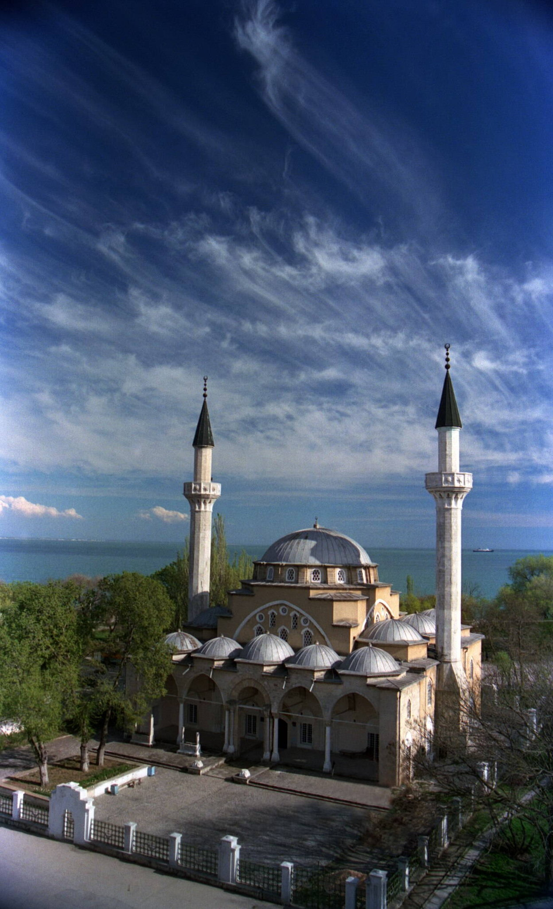
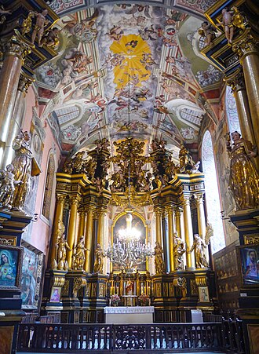
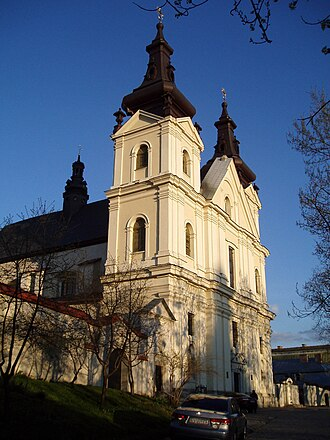
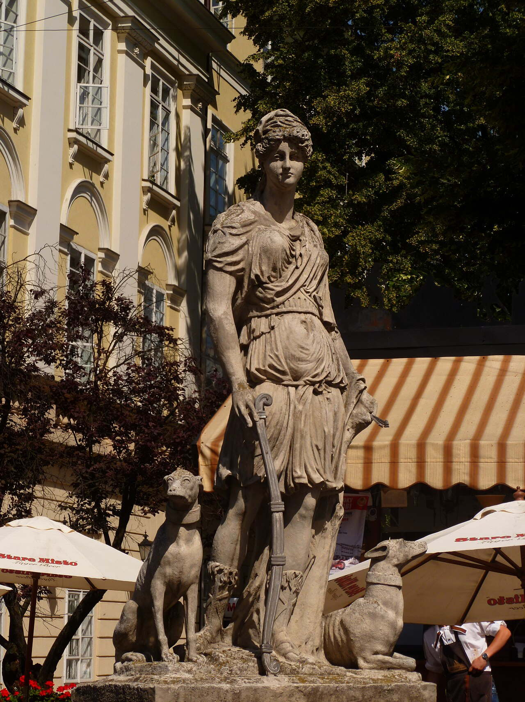
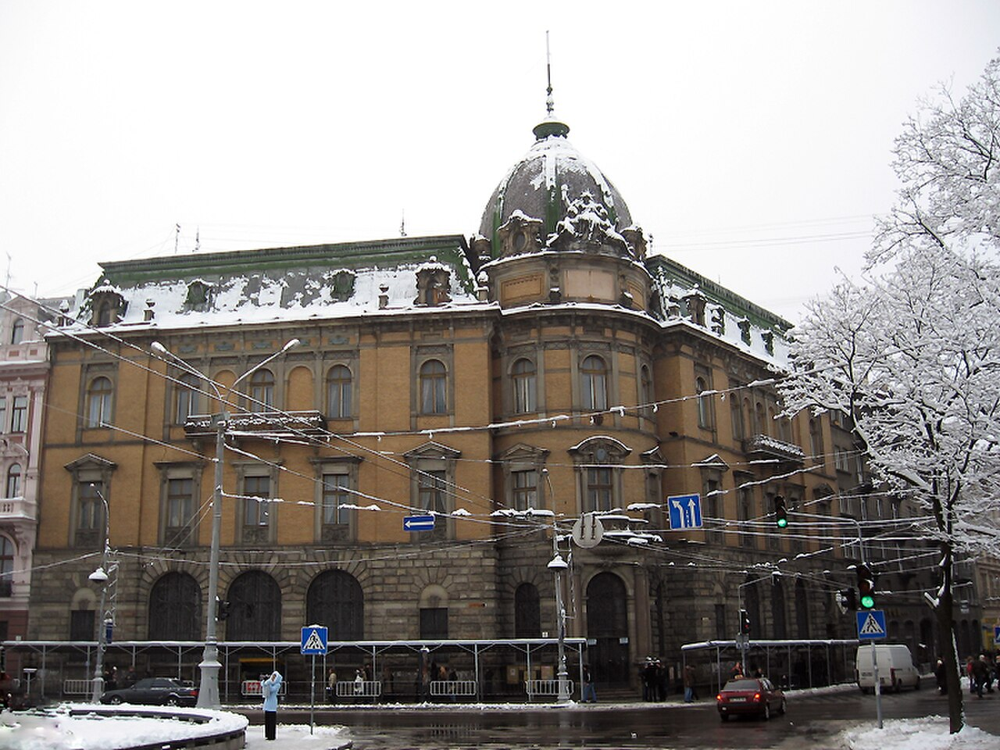
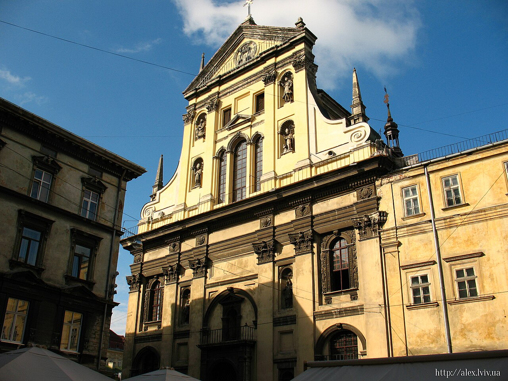
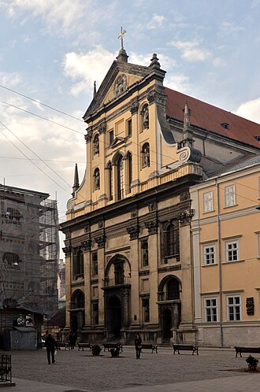
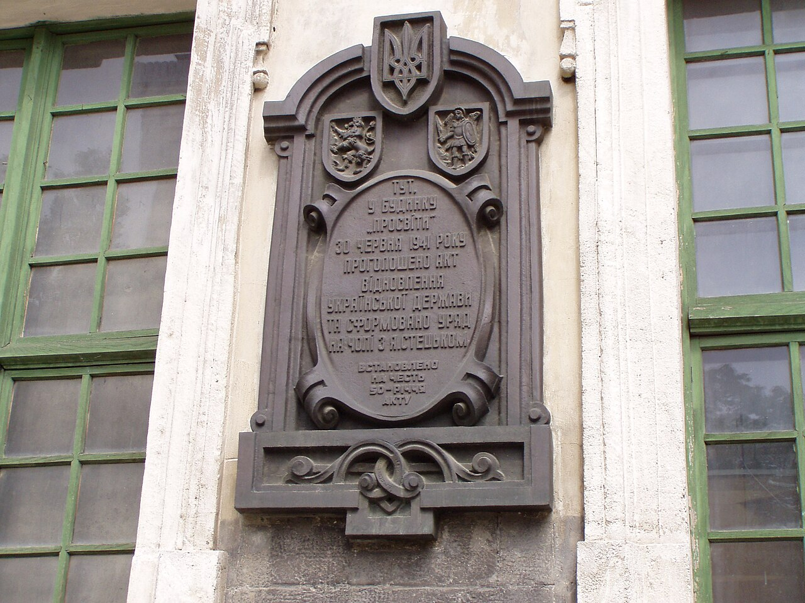
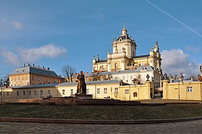

Historical and reference coats of arms


Lviv
Guide. Places in this edition: 36.
OTIUM is the practice of deliberate leisure. In the classical sense, otium is not escape from work but time when attention returns to memory, landscape, and thought — without a utilitarian deadline.
We shape routes for lingering, not for checklist tourism. The goal is presence in a place rather than consumption of sights.
OTIUM is not a tour operator. It is an invitation to walk, pause, and leave a route unfinished if the light on a façade deserves another minute.
Historical and reference coats of arms
Guide. Places in this edition: 36.
0204-Han Cami.jpg

0204-Han Cami.jpg — landmark in Lviv.

Armenian Cathedral — landmark in Lviv.

Arsenal Museum — landmark in Lviv.

Bandinelli Palace (Italian: Palazzo Bandinelli; Ukrainian: Палац Бандінеллі; Polish: Kamienica Bandinellich we Lwowie) is a late Renaissance townhouse (kamienica) facing Market Square in Lviv, Ukraine. It was built in 1589 by a pharmacist Jarosz Wedelski, and in 1634 it was bought by a Florentine merchant, Roberto Bandinelli, known as the founder of the first post office in eastern Galicia. That office was housed in the building from 1629 onward, and was closed in a few years when the business became unprofitable.

Basilian monks are Eastern Christian monks who follow the rule of Basil the Great, bishop of Caesarea (330–379). The term 'Basilian' is typically used only in the Catholic Church to distinguish Greek Catholic monks from other forms of monastic life in the Catholic Church. In the Eastern Orthodox Church, all monks follow the Rule of Saint Basil, and so do not distinguish themselves as 'Basilian'.

Beer brewing museum Lviv — landmark in Lviv.

Bernardine church is a historic and cultural landmark in Lviv.

Bernardine church — landmark in Lviv.

Bernardine church is a historic and cultural landmark in Lviv.

The Boim Chapel (Ukrainian: Каплиця Боїмів; Polish: Kaplica Boimów) is a monument of religious architecture in Cathedral Square, Lviv, Ukraine. It was constructed from 1609 to 1615 and is part of Lviv's Old Town, a UNESCO World Heritage Site. History The chapel was built for the Boim family on the territory of a contemporary urban cemetery near the Latin Cathedral.

Carmelite church is a historic and cultural landmark in Lviv.
DianaFountain Lviv 2013.JPG

DianaFountain Lviv 2013.JPG — landmark in Lviv.

Dominican church Lviv — landmark in Lviv.

Dormition Church — landmark in Lviv.
Ethnographic Museum in Lviv.jpg

Ethnographic Museum in Lviv.jpg — landmark in Lviv.

Golden Rose synagogue area — landmark in Lviv.

High Castle Hill — landmark in Lviv.

Italian Courtyard — landmark in Lviv.
Jesuit church in Lviv.jpg

Jesuit church in Lviv.jpg — landmark in Lviv.

Jesuit church Lviv is a historic and cultural landmark in Lviv.

Korniakt Tower — landmark in Lviv.

Latin Cathedral — landmark in Lviv.

Lviv Opera House — landmark in Lviv.
LvivRynek1941.JPG

LvivRynek1941.JPG — landmark in Lviv.

The Lychakiv Cemetery (Ukrainian: Личаківський цвинтар, romanized: Lychakivskyi tsvyntar; Polish: Cmentarz Łyczakowski we Lwowie), officially titled State History and Culture Museum-Reserve "Lychakiv Cemetery" (Ukrainian: Державний історико-культурний музей-заповідник «Личаківський цвинтар»), is a historic cemetery in Lviv, Ukraine. History Since its creation in 1787 as Łyczakowski Cemetery, it has been the main necropolis of the city's (at the time named Lemberg) intelligentsia, middle and upper classes.

Mickiewicz Square — landmark in Lviv.

Palace of Culture Lviv — landmark in Lviv.

Pharmacy Museum — landmark in Lviv.

Potocki Palace — landmark in Lviv.

Rynok Square — landmark in Lviv.

Solomiya Krushelnytska Lviv Opera — landmark in Lviv.

St George's Cathedral is a historic and cultural landmark in Lviv.

St Georges Cathedral — landmark in Lviv.

Stryi Park — landmark in Lviv.

University of Lviv main — landmark in Lviv.
Львівська ратуша вночі.jpg

Львівська ратуша вночі.jpg — landmark in Lviv.